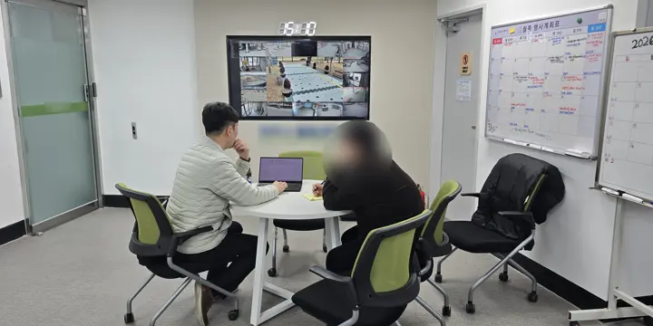
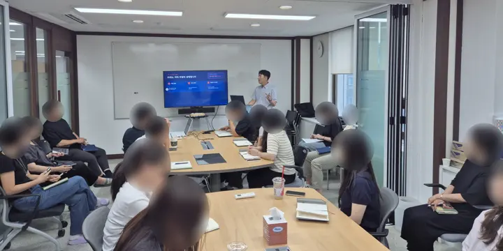
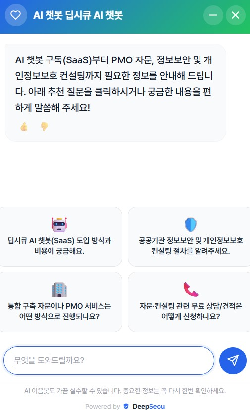
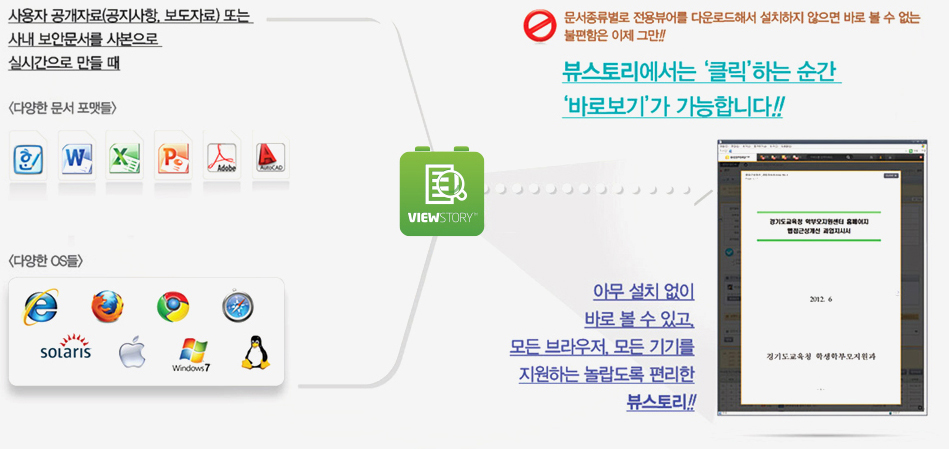

정보보안 관리체계 진단
사업수행계획서와 결과보고서를 바탕으로 관리 현황 점검, 정책 정비 및 개선 방향을 도출한 사례입니다.
딥시큐는 공공기관과 기업의 개인정보보호 및 정보보안 업무를 지원하는 컨설팅 기업입니다. 보호체계 진단부터 정보화 사업의 기획과 운영까지, 기관의 환경에 맞추어 자문합니다.

업무 흐름과 운영 기준을 살펴보고 담당자와 과업 범위를 합의합니다.
업무 영향과 실행 여건을 검토해 먼저 해결할 과제를 정합니다.
담당자가 이행 상황을 확인할 수 있도록 일정과 산출물, 점검 기준을 정리합니다.
개인정보보호와 정보보안을 중심으로 정보화 사업의 기획·구축·운영을 지원합니다.
 개인정보보호 컨설팅개인정보 처리업무와 관리체계를 점검하고, 보호수준 평가 준비와 개선과제 이행을 지원합니다.
개인정보보호 컨설팅개인정보 처리업무와 관리체계를 점검하고, 보호수준 평가 준비와 개선과제 이행을 지원합니다.
정보보안 진단·컨설팅관리체계와 시스템 운영 현황을 함께 살펴 보안 위험의 우선순위와 개선 방향을 제시합니다. 정보화 기획·구축 PMO요구사항과 발주 범위를 구체화하고, 구축 과정에서 일정·품질·검수의 기준을 세웁니다.
정보화 기획·구축 PMO요구사항과 발주 범위를 구체화하고, 구축 과정에서 일정·품질·검수의 기준을 세웁니다. 정보화 진단·중장기 전략시스템과 운영 구조를 분석해 투자 시점과 실행 순서를 담은 개선 로드맵을 수립합니다.
정보화 진단·중장기 전략시스템과 운영 구조를 분석해 투자 시점과 실행 순서를 담은 개선 로드맵을 수립합니다. 정보시스템 운영·유지관리운영 현황과 업무 분장을 바탕으로 점검·변경·장애 대응의 관리 범위를 정합니다.
정보시스템 운영·유지관리운영 현황과 업무 분장을 바탕으로 점검·변경·장애 대응의 관리 범위를 정합니다.
보안교육·모의훈련업무 환경에 맞는 보안교육과 모의훈련을 설계하고, 결과를 후속 교육에 반영합니다.보고서와 산출물, 견적에서 확인한 단계별 사례입니다. 진행 중 자료는 문서 작성 시점의 범위를 나타냅니다.
사업수행계획서와 결과보고서를 바탕으로 관리 현황 점검, 정책 정비 및 개선 방향을 도출한 사례입니다.
최종 결과보고에서 운영 현황 분석, 개선과제 및 단계별 이행 로드맵을 제시했습니다.
평가 지표별 자료를 정리하고 개선 항목을 검토했습니다. 확인한 결과보고서는 중간 결과입니다.
현황 분석 및 요구사항 정리 산출물이 확인된 사례입니다. 전체 사업 완료 여부는 확인되지 않았습니다.
견적 자료에서 훈련 운영 범위를 확인했습니다.
운영 업무에 필요한 유지보수 범위를 검토한 견적 사례입니다.
이용자 안내, 문서 열람, 임직원 보안훈련에 필요한 솔루션을 도입 환경에 맞게 안내합니다.
이음봇(IEUMBOT)은 딥시큐가 개발한 문서 기반 AI 챗봇입니다. 기관이 등록한 공식 자료에서 답변 근거를 찾아 출처를 표시하고, 근거가 부족한 질문은 담당 부서로 안내하도록 설정할 수 있습니다. 연동 방식과 자료 갱신 절차는 도입 기관과 협의합니다.

방문자가 누리집의 첨부 문서를 브라우저에서 미리 볼 수 있도록 지원하는 유비스토리 솔루션입니다. 딥시큐는 공급 및 연동 범위를 안내하며, 지원 형식과 라이선스는 제조사 조건에 따릅니다.

파수의 Mind-SAT을 활용해 이메일 보안 모의훈련을 운영합니다. 딥시큐는 기관과 훈련 범위를 협의하고, 운영 결과 분석과 후속 교육을 지원합니다.